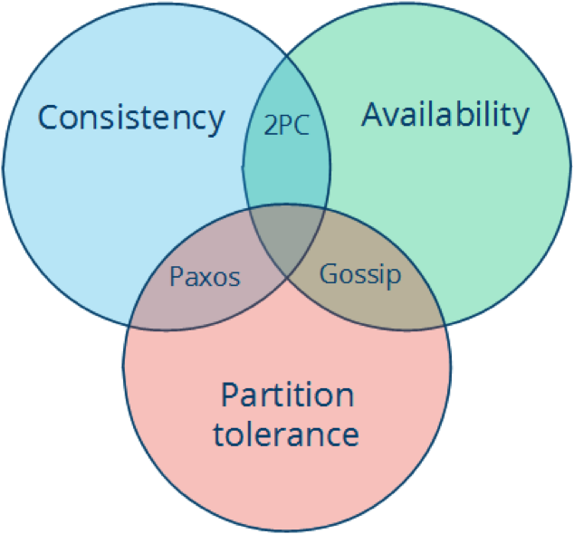
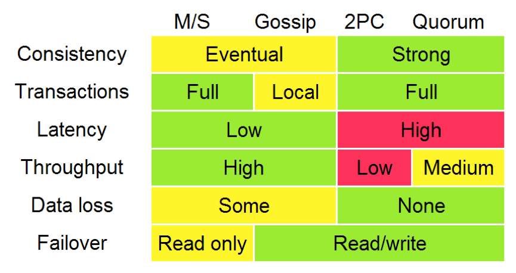

- 000 开篇词 洞悉技术的本质，享受科技的乐趣.md.html
- 001 程序员如何用技术变现（上）.md.html
- 002 程序员如何用技术变现（下）.md.html
- 003 Equifax信息泄露始末.md.html
- 004 从Equifax信息泄露看数据安全.md.html
- 005 何为技术领导力.md.html
- 006 如何拥有技术领导力.md.html
- 007 推荐阅读：每个程序员都该知道的事.md.html
- 008 Go语言，Docker和新技术.md.html
- 009 答疑解惑：渴望、热情和选择.md.html
- 010 如何成为一个大家愿意追随的Leader？.md.html
- 011 程序中的错误处理：错误返回码和异常捕捉.md.html
- 012 程序中的错误处理：异步编程和最佳实践.md.html
- 013 魔数 0x5f3759df.md.html
- 014 推荐阅读：机器学习101.md.html
- 015 时间管理：同扭曲时间的事儿抗争.md.html
- 016 时间管理：投资赚取时间.md.html
- 017 故障处理最佳实践：应对故障.md.html
- 018 故障处理最佳实践：故障改进.md.html
- 019 答疑解惑：我们应该能够识别的表象和本质.md.html
- 020 分布式系统架构的冰与火.md.html
- 021 从亚马逊的实践，谈分布式系统的难点.md.html
- 022 分布式系统的技术栈.md.html
- 023 分布式系统关键技术：全栈监控.md.html
- 024 分布式系统关键技术：服务调度.md.html
- 025 分布式系统关键技术：流量与数据调度.md.html
- 026 洞悉PaaS平台的本质.md.html
- 027 推荐阅读：分布式系统架构经典资料.md.html
- 028 编程范式游记（1）- 起源.md.html
- 029 编程范式游记（2）- 泛型编程.md.html
- 030 编程范式游记（3） - 类型系统和泛型的本质.md.html
- 031 Git协同工作流，你该怎样选.md.html
- 032 推荐阅读：分布式数据调度相关论文.md.html
- 033 编程范式游记（4）- 函数式编程.md.html
- 034 编程范式游记（5）- 修饰器模式.md.html
- 035 编程范式游记（6）- 面向对象编程.md.html
- 036 编程范式游记（7）- 基于原型的编程范式.md.html
- 037 编程范式游记（8）- Go 语言的委托模式.md.html
- 038 编程范式游记（9）- 编程的本质.md.html
- 039 编程范式游记（10）- 逻辑编程范式.md.html
- 040 编程范式游记（11）- 程序世界里的编程范式.md.html
- 041 弹力设计篇之“认识故障和弹力设计”.md.html
- 042 弹力设计篇之“隔离设计”.md.html
- 043 弹力设计篇之“异步通讯设计”.md.html
- 044 弹力设计篇之“幂等性设计”.md.html
- 045 弹力设计篇之“服务的状态”.md.html
- 046 弹力设计篇之“补偿事务”.md.html
- 047 弹力设计篇之“重试设计”.md.html
- 048 弹力设计篇之“熔断设计”.md.html
- 049 弹力设计篇之“限流设计”.md.html
- 050 弹力设计篇之“降级设计”.md.html
- 051 弹力设计篇之“弹力设计总结”.md.html
- 052 区块链技术 - 区块链的革命性及技术概要.md.html
- 053 区块链技术 - 区块链技术细节 - 哈希算法.md.html
- 054 区块链技术 - 区块链技术细节 - 加密和挖矿.md.html
- 055 区块链技术 - 去中心化的共识机制.md.html
- 056 区块链技术 - 智能合约.md.html
- 057 区块链技术 - 传统金融和虚拟货币.md.html
- 058 管理设计篇之分布式锁.md.html
- 059 管理设计篇之配置中心.md.html
- 060 管理设计篇之边车模式.md.html
- 061 管理设计篇之服务网格.md.html
- 062 管理设计篇之网关模式.md.html
- 063 管理设计篇之部署升级策略.md.html
- 064 性能设计篇之缓存.md.html
- 065 性能设计篇之异步处理.md.html
- 066 性能设计篇之数据库扩展.md.html
- 067 性能设计篇之秒杀.md.html
- 068 性能设计篇之边缘计算.md.html
- 069 程序员练级攻略（2018）：开篇词.md.html
- 070 程序员练级攻略（2018）：零基础启蒙.md.html
- 071 程序员练级攻略（2018）：正式入门.md.html
- 072 程序员练级攻略（2018）：程序员修养.md.html
- 073 程序员练级攻略（2018）：编程语言.md.html
- 074 程序员练级攻略：理论学科.md.html
- 075 程序员练级攻略（2018）：系统知识.md.html
- 076 程序员练级攻略（2018）：软件设计.md.html
- 077 程序员练级攻略（2018）：Linux系统、内存和网络.md.html
- 078 程序员练级攻略（2018）：异步IO模型和Lock-Free编程.md.html
- 079 程序员练级攻略（2018）：Java底层知识.md.html
- 080 程序员练级攻略（2018）：数据库.md.html
- 081 程序员练级攻略（2018）：分布式架构入门.md.html
- 082 程序员练级攻略（2018）：分布式架构经典图书和论文.md.html
- 083 程序员练级攻略（2018）：分布式架构工程设计.md.html
- 084 程序员练级攻略（2018）：微服务.md.html
- 085 程序员练级攻略（2018）：容器化和自动化运维.md.html
- 086 程序员练级攻略（2018）：机器学习和人工智能.md.html
- 087 程序员练级攻略（2018）：前端基础和底层原理.md.html
- 088 程序员练级攻略（2018）：前端性能优化和框架.md.html
- 089 程序员练级攻略（2018）：UIUX设计.md.html
- 090 程序员练级攻略（2018）：技术资源集散地.md.html
- 091 程序员面试攻略：面试前的准备.md.html
- 092 程序员面试攻略：面试中的技巧.md.html
- 093 程序员面试攻略：面试风格.md.html
- 094 程序员面试攻略：实力才是王中王.md.html
- 095 高效学习：端正学习态度.md.html
- 096 高效学习：源头、原理和知识地图.md.html
- 097 高效学习：深度，归纳和坚持实践.md.html
- 098 高效学习：如何学习和阅读代码.md.html
- 099 高效学习：面对枯燥和量大的知识.md.html
- 100 高效沟通：Talk和Code同等重要.md.html
- 101 高效沟通：沟通阻碍和应对方法.md.html
- 102 高效沟通：沟通方式及技巧.md.html
- 103 高效沟通：沟通技术.md.html
- 104 高效沟通：好老板要善于提问.md.html
- 105 高效沟通：好好说话的艺术.md.html
- 106 加餐 谈谈我的“三观”.md.html
- 107 结束语 业精于勤，行成于思.md.html
027 推荐阅读：分布式系统架构经典资料
前段时间，我写了一系列分布式系统架构方面的文章，有很多读者纷纷留言讨论相关的话题，还有读者留言表示对分布式系统架构这个主题感兴趣，希望我能推荐一些学习资料。
就像我在前面的文章中多次提到的，分布式系统的技术栈巨大无比，所以我要推荐的学习资料也比较多，会在后面的文章中陆续发出。在今天这篇文章中，我将推荐一些分布式系统的基础理论和一些不错的图书和资料。
这篇文章比较长，所以我特意整理了目录，帮你快速找到自己感兴趣的内容。
基础理论
- CAP 定理
- Fallacies of Distributed Computing
经典资料
- Distributed systems theory for the distributed systems engineer
- FLP Impossibility Result
- An introduction to distributed systems
- Distributed Systems for fun and profit
- Distributed Systems: Principles and Paradigms
- Scalable Web Architecture and Distributed Systems
- Principles of Distributed Systems
- Making reliable distributed systems in the presence of software errors
- Designing Data Intensive Applications
基础理论
下面这些基础知识有可能你已经知道了，不过还是容我把其分享在这里。我希望用比较通俗易懂的文字将这些枯燥的理论知识讲请楚。
CAP 定理
CAP 定理是分布式系统设计中最基础，也是最为关键的理论。它指出，分布式数据存储不可能同时满足以下三个条件。
- 一致性（Consistency）：每次读取要么获得最近写入的数据，要么获得一个错误。
- 可用性（Availability）：每次请求都能获得一个（非错误）响应，但不保证返回的是最新写入的数据。
- 分区容忍（Partition tolerance）：尽管任意数量的消息被节点间的网络丢失（或延迟），系统仍继续运行。
也就是说，CAP 定理表明，在存在网络分区的情况下，一致性和可用性必须二选一。而在没有发生网络故障时，即分布式系统正常运行时，一致性和可用性是可以同时被满足的。这里需要注意的是，CAP 定理中的一致性与 ACID 数据库事务中的一致性截然不同。
掌握 CAP 定理，尤其是能够正确理解 C、A、P 的含义，对于系统架构来说非常重要。因为对于分布式系统来说，网络故障在所难免，如何在出现网络故障的时候，维持系统按照正常的行为逻辑运行就显得尤为重要。你可以结合实际的业务场景和具体需求，来进行权衡。
例如，对于大多数互联网应用来说（如门户网站），因为机器数量庞大，部署节点分散，网络故障是常态，可用性是必须要保证的，所以只有舍弃一致性来保证服务的 AP。而对于银行等，需要确保一致性的场景，通常会权衡 CA 和 CP 模型，CA 模型网络故障时完全不可用，CP 模型具备部分可用性。

- CA (consistency + availability)，这样的系统关注一致性和可用性，它需要非常严格的全体一致的协议，比如“两阶段提交”（2PC）。CA 系统不能容忍网络错误或节点错误，一旦出现这样的问题，整个系统就会拒绝写请求，因为它并不知道对面的那个结点是否挂掉了，还是只是网络问题。唯一安全的做法就是把自己变成只读的。
- CP (consistency + partition tolerance)，这样的系统关注一致性和分区容忍性。它关注的是系统里大多数人的一致性协议，比如：Paxos 算法 (Quorum 类的算法)。这样的系统只需要保证大多数结点数据一致，而少数的结点会在没有同步到最新版本的数据时变成不可用的状态。这样能够提供一部分的可用性。
- AP (availability + partition tolerance)，这样的系统关心可用性和分区容忍性。因此，这样的系统不能达成一致性，需要给出数据冲突，给出数据冲突就需要维护数据版本。Dynamo 就是这样的系统。
然而，还是有一些人会错误地理解 CAP 定理，甚至误用。Cloudera 工程博客中，CAP Confusion: Problems with ‘partition tolerance’一文中对此有详细的阐述。
在谷歌的Transaction Across DataCenter 视频中，我们可以看到下面这样的图。这个是 CAP 理论在具体工程中的体现。

Fallacies of Distributed Computing
本文是英文维基百科上的一篇文章。它是 Sun 公司的劳伦斯·彼得·多伊奇（Laurence Peter Deutsch）等人于 1994~1997 年提出的，讲的是刚刚进入分布式计算领域的程序员常会有的一系列错误假设。
多伊奇于 1946 年出生在美国波士顿。他创办了阿拉丁企业（Aladdin Enterprises），并在该公司编写出了著名的 Ghostscript 开源软件，于 1988 年首次发布。
他在学生时代就和艾伦·凯（Alan Kay）等比他年长的人一起开发了 Smalltalk，并且他的开发成果激发了后来 Java 语言 JIT 编译技术的创造灵感。他后来在 Sun 公司工作并成为 Sun 的公司院士。在 1994 年，他成为了 ACM 院士。
基本上，每个人刚开始建立一个分布式系统时，都做了以下 8 条假定。随着时间的推移，每一条都会被证明是错误的，也都会导致严重的问题，以及痛苦的学习体验。
- 网络是稳定的。
- 网络传输的延迟是零。
- 网络的带宽是无穷大。
- 网络是安全的。
- 网络的拓扑不会改变。
- 只有一个系统管理员。
- 传输数据的成本为零。
- 整个网络是同构的。
阿尔农·罗特姆 - 盖尔 - 奥兹（Arnon Rotem-Gal-Oz）写了一篇长文Fallacies of Distributed Computing Explained来解释这些点。
由于他写这篇文章的时候已经是 2006 年了，所以从中能看到这 8 条常见错误被提出十多年后还有什么样的影响：一是，为什么当今的分布式软件系统也需要避免这些设计错误；二是，在当今的软硬件环境里，这些错误意味着什么。比如，文中在谈“延迟为零”假设时，还谈到了 AJAX，而这是 2005 年开始流行的技术。
而加勒思·威尔逊（Gareth Wilson）的文章则用日常生活中的例子，对这些点做了更为通俗的解释。
这 8 个需要避免的错误不仅对于中间件和底层系统开发者及架构师是重要的知识，而且对于网络应用程序开发者也同样重要。分布式系统的其他部分，如容错、备份、分片、微服务等也许可以对应用程序开发者部分透明，但这 8 点则是应用程序开发者也必须知道的。
为什么我们要深刻地认识这 8 个错误？是因为，这要我们清楚地认识到——在分布式系统中错误是不可能避免的，我们能做的不是避免错误，而是要把错误的处理当成功能写在代码中。
后面，我会写一个系列的文章来谈一谈，分布式系统容错设计中的一些常见设计模式。敬请关注！
经典资料
Distributed systems theory for the distributed systems engineer
本文作者认为，推荐大量的理论论文是学习分布式系统理论的错误方法，除非这是你的博士课程。因为论文通常难度大又很复杂，需要认真学习，而且需要理解这些研究成果产生的时代背景，才能真正的领悟到其中的精妙之处。
在本文中，作者给出了他整理的分布式工程师必须要掌握的知识列表，并直言掌握这些足够设计出新的分布式系统。首先，作者推荐了 4 份阅读材料，它们共同概括了构建分布式系统的难点，以及所有工程师必须克服的技术难题。
- Distributed Systems for Fun and Profit，这是一本小书，涵盖了分布式系统中的关键问题，包括时间的作用和不同的复制策略。后文中对这本书有较详细的介绍。
- Notes on distributed systems for young bloods，这篇文章中没有理论，是一份适合新手阅读的分布式系统实践笔记。
- A Note on Distributed Systems，这是一篇经典的论文，讲述了为什么在分布式系统中，远程交互不能像本地对象那样进行。
- The fallacies of distributed computing，每个分布式系统新手都会做的 8 个错误假设，并探讨了其会带来的影响。上文中专门对这篇文章做了介绍。
随后，分享了几个关键点。
- 失败和时间（Failure and Time）。分布式系统工程师面临的很多困难都可以归咎于两个根本原因：1. 进程可能会失败；2. 没有好方法表明进程失败。这就涉及到如何设置系统时钟，以及进程间的通讯机制，在没有任何共享时钟的情况下，如何确定一个事件发生在另一个事件之前。
可以参考 Lamport 时钟和 Vector 时钟，还可以看看Dynamo 论文。
- 容错的压力（The basic tension of fault tolerance）。能在不降级的情况下容错的系统一定要像没有错误发生的那样运行。这就意味着，系统的某些部分必须冗余地工作，从而在性能和资源消耗两方面带来成本。
最终一致性以及其他技术方案在以系统行为弱保证为代价，来试图避免这种系统压力。阅读Dynamo 论文和帕特·赫尔兰（Pat Helland）的经典论文Life Beyond Transactions能获很得大启发。
- 基本原语（Basic primitives）。在分布式系统中几乎没有一致认同的基本构建模块，但目前在越来越多地在出现。比如 Leader 选举，可以参考Bully 算法；分布式状态机复制，可以参考维基百科和Lampson 的论文，后者更权威，只是有些枯燥。
- 基本结论（Fundamental Results）。某些事实是需要吸收理解的，有几点：如果进程之间可能丢失某些消息，那么不可能在实现一致性存储的同时响应所有的请求，这就是 CAP 定理；一致性不可能同时满足以下条件：a. 总是正确，b. 在异步系统中只要有一台机器发生故障，系统总是能终止运行——停止失败（FLP 不可能性）；一般而言，消息交互少于两轮都不可能达成共识（Consensus）。
- 真实系统（Real systems）。学习分布式系统架构最重要的是，结合一些真实系统的描述，反复思考和点评其背后的设计决策。如谷歌的 GFS、Spanner、Chubby、BigTable、Dapper 等，以及 Dryad、Cassandra 和 Ceph 等非谷歌系统。
FLP Impossibility Result
FLP 不可能性的名称起源于它的三位作者，Fischer、Lynch 和 Paterson。它是关于理论上能做出的功能最强的共识算法会受到怎样的限制的讨论。
所谓共识问题，就是让网络上的分布式处理者最后都对同一个结果值达成共识。该解决方案对错误有恢复能力，处理者一旦崩溃以后，就不再参与计算。在同步环境下，每个操作步骤的时间和网络通信的延迟都是有限的，要解决共识问题是可能的，方式是：等待一个完整的步长来检测某个处理者是否已失败。如果没有收到回复，那就假定它已经崩溃。
共识问题有几个变种，它们在“强度”方面有所不同——通常，一个更“强”问题的解决方案同时也能解决比该问题更“弱”的问题。共识问题的一个较强的形式如下。
给出一个处理者的集合，其中每一个处理者都有一个初始值：
- 所有无错误的进程（处理过程）最终都将决定一个值；
- 所有会做决定的无错误进程决定的都将是同一个值；
- 最终被决定的值必须被至少一个进程提出过。
这三个特性分别被称为“终止”、“一致同意”和“有效性”。任何一个具备这三点特性的算法都被认为是解决了共识问题。
FLP 不可能性则讨论了异步模型下的情况，主要结论有两条。
- 在异步模型下不存在一个完全正确的共识算法。不仅上述较“强”形式的共识算法不可能实现，FLP 还证明了比它弱一些的、只需要有一些无错误的进程做决定就足够的共识算法也是不可能实现的。
- 在异步模型下存在一个部分正确的共识算法，前提是所有无错误的进程都总能做出一个决定，此外没有进程会在它的执行过程中死亡，并且初始情况下超过半数进程都是存活状态。
FLP 的结论是，在异步模型中，仅一个处理者可能崩溃的情况下，就已经没有分布式算法能解决共识问题。这是该问题的理论上界。其背后的原因在于，异步模型下对于一个处理者完成工作然后再回复消息所需的时间并没有上界。因此，无法判断出一个处理者到底是崩溃了，还是在用较长的时间来回复，或者是网络有很大的延迟。
FLP 不可能性对我们还有别的启发。一是网络延迟很重要，网络不能长时间处于拥塞状态，否则共识算法将可能因为网络延迟过长而导致超时失败。二是计算时间也很重要。对于需要计算共识的处理过程（进程），如分布式数据库提交，需要在短时间里就计算出能否提交的结果，那就要保证计算结点资源充分，特别是内存容量、磁盘空闲时间和 CPU 时间方面要足够，并在软件层面确保计算不超时。
另一个问题是，像 Paxos 这样的共识算法为什么可行？实际上它并不属于 FLP 不可能性证明中所说的“完全正确”的算法。它的正确性会受超时值的影响。但这并不妨碍它在实践中有效，因为我们可以通过避免网络拥塞等手段来保证超时值是合适的。
An introduction to distributed systems
它是分布式系统基础课的课程提纲，也是一份很棒的分布式系统介绍，几乎涵盖了所有知识点，并辅以简洁并切中要害的说明文字，非常适合初学者提纲挈领地了解知识全貌，快速与现有知识结合，形成知识体系。此外，还可以把它作为分布式系统的知识图谱，根据其中列出的知识点一一搜索，你能学会所有的东西。
Distributed Systems for fun and profit
这是一本免费的电子书。作者撰写此书的目的是希望以一种更易于理解的方式，讲述以亚马逊的 Dynamo、谷歌的 BigTable 和 MapReduce 等为代表的分布式系统背后的核心思想。
因而，书中着力撰写分布式系统中的关键概念，以便让读者能够快速了解最为核心的知识，并且进行了足够详实的讲述，方便读者体会和理解，又不至于陷入细节。
全书分为五章，讲述了扩展性、可用性、性能和容错等基础知识，FLP 不可能性和 CAP 定理，探讨了大量的一致性模型；讨论了时间和顺序，及时钟的各种用法。随后，探讨了复制问题，如何防止差异，以及如何接受差异。此外，每章末尾都给出了针对本章内容的扩展阅读资源列表，这些资料是对本书内容的很好补充。
[Distributed Systems: Principles and Paradigms](http://barbie.uta.edu/~jli/Resources/MapReduce&Hadoop/Distributed Systems Principles and Paradigms.pdf)
本书是由计算机科学家安德鲁·斯图尔特·塔能鲍姆（Andrew S. Tanenbaum）和其同事马丁·范·斯蒂恩（Martin van Steen）合力撰写的，是分布式系统方面的经典教材。
语言简洁，内容通俗易懂，介绍了分布式系统的七大核心原理，并给出了大量的例子；系统讲述了分布式系统的概念和技术，包括通信、进程、命名、同步化、一致性和复制、容错以及安全等；讨论了分布式应用的开发方法（即范型）。
但本书不是一本指导“如何做”的手册，仅适合系统性地学习基础知识，了解编写分布式系统的基本原则和逻辑。中文翻译版为《分布式系统原理与范型》（第二版）。
Scalable Web Architecture and Distributed Systems
这是一本免费的在线小册子，其中文翻译版为可扩展的 Web 架构和分布式系统。
本书主要针对面向的互联网（公网）的分布式系统，但其中的原理或许也可以应用于其他分布式系统的设计中。作者的观点是，通过了解大型网站的分布式架构原理，小型网站的构建也能从中受益。本书从大型互联网系统的常见特性，如高可用、高性能、高可靠、易管理等出发，引出了一个类似于 Flickr 的典型的大型图片网站的例子。
首先，从程序模块化易组合的角度出发，引出了面向服务架构（SOA）的概念。同时，引申出写入和读取两者的性能问题，及对此二者如何调度的考量——在当今的软硬件架构上，写入几乎总是比读取更慢，包括软件层面引起的写入慢（如数据库的一致性要求和 B 树的修改）和硬件层面引起的写入慢（如 SSD）。
网络提供商提供的下载带宽也通常比上传带宽更大。读取往往可以异步操作，还可以做 gzip 压缩。写入则往往需要保持连接直到数据上传完成。因此，往往我们会想把服务做成读写分离的形式。然后通过一个 Flickr 的例子，介绍了他们的服务器分片式集群做法。
接下来讲了冗余。数据的冗余异地备份（如 master-slave）、服务的多版本冗余、避免单点故障等。
随后，在冗余的基础上，讲了多分区扩容，亦即横向扩容。横向扩容是在单机容量无法满足需求的情况下不得不做的设计。但横向扩容会带来一个问题，即数据的局域性会变差。本来数据可以存在于同一台服务器上，但现在数据不得不存在于不同服务器上，潜在地降低了系统的性能（主要是可能延长响应时间）。另一个问题是多份数据的不一致性。
之后，本书开始深入讲解数据访问层面的设计。首先抛出一个大型数据（TB 级以上）的存储问题。如果内存都无法缓存该数据量，性能将大幅下降，那么就需要缓存数据。数据可以缓存在每个节点上。
但如果为所有节点使用负载均衡，那么分配到每个节点的请求将十分随机，大大降低缓存命中率，从而导致低效的缓存。接下来考虑全局缓存的设计。再接下来考虑分布式缓存的设计。进一步，介绍了 Memcached，以及 Facebook 的缓存设计方案。
代理服务器则可以用于把多个重复请求合并成一个，对于公网上的公共服务来说，这样做可以大大减少对数据层访问的次数。Squid 和 Varnish 是两个可用于生产的代理服务软件。
当知道所需要读取的数据的元信息时，比如知道一张图片的 URL，或者知道一个要全文搜索的单词时，索引就可以帮助找到那几台存有该信息的服务器，并从它们那里获取数据。文中扩展性地讨论了本话题。
接下来谈负载均衡器，以及一些典型的负载均衡拓扑。然后讨论了对于用户会话数据如何处理。比如，对于电子商务网站，用户的购物车在没有下单之前都必须保持有效。
一种办法是让用户会话与服务器产生关联，但这样做会较难实现自动故障转移，如何做好是个问题。另外，何时该使用负载均衡是个问题。有时节点数量少的情况下，只要使用轮换式 DNS 即可。负载均衡也会让在线性能问题的检测变得更麻烦。
对于写入的负载，可以用队列的方式来减少对服务器的压力，保证服务器的效率。消息队列的开源实现有很多，如 RabbitMQ、ActiveMQ、BeanstalkD，但有些队列方案也使用了如 Zookeeper，甚至是像 Redis 这样的存储服务。
本书主要讲述了高性能互联网分布式服务的架构方案，并介绍了许多实用的工具。作者指出这是一个令人兴奋的设计领域，虽然只讲了一些皮毛，但这一领域不仅现在有很多创新，将来也会越来越多。
Principles of Distributed Systems
本书是苏黎世联邦理工学院的教材。它讲述了多种分布式系统中会用到的算法。虽然分布式系统的不同场景会用到不同算法，但并不表示这些算法都会被用到。不过，对于学生来说，掌握了算法设计的精髓也就能举一反三地设计出解决其他问题的算法，从而得到分布式系统架构设计中所需的算法。
本书覆盖的算法有：
- 顶点涂色算法（可用于解决互相冲突的任务分配问题）
- 分布式的树算法（广播算法、会聚算法、广度优先搜索树算法、最小生成树算法）
- 容错以及 Paxos（Paxos 是最经典的共识算法之一）
- 拜占庭协议（节点可能没有完全宕机，而是输出错误的信息）
- 全互联网络（服务器两两互联的情况下算法的复杂度）
- 多核计算的工程实践（事务性存储、资源争用管理）
- 主导集（又一个用随机化算法打破对称性的例子；这些算法可以用于路由器建立路由）
- ……
这些算法对你迈向更高级更广阔的技术领域真的相当有帮助的。
Making reliable distributed systems in the presence of software errors
这本书的书名直译过来是在有软件错误的情况下，构建可靠的分布式系统，Erlang 之父乔·阿姆斯特朗（Joe Armstrong）的力作。书中撰写的内容是从 1981 年开始的一个研究项目的成果，这个项目是寻找更好的电信应用编程方式。
当时的电信应用都是大型程序，虽然经过了仔细的测试，但投入使用时程序中仍会存在大量的错误。作者及其同事假设这些程序中确实有错误，然后想法设法在这些错误存在的情况下构建可靠的系统。他们测试了所有的编程语言，没有一门语言拥有电信行业所需要的所有特性，所以促使一门全新的编程语言 Erlang 的开发，以及随之出现的构建健壮系统（OTP）的设计方法论和库集。
书中抽象了电信应用的所有需求，定义了问题域，讲述了系统构建思路——模拟现实，简单通用，并给出了指导规范。阿姆斯特朗认为，在存在软件错误的情况下，构建可靠系统的核心问题可以通过编程语言或者编程语言的标准库来解决。所以本书有很大的篇幅来介绍 Erlang，以及如何运用其构建具有容错能力的电信应用。
虽然书中的内容是以构建 20 世纪 80 年代的电信系统为背景，但是这种大规模分布式的系统开发思路，以及对系统容错能力的核心需求，与互联网时代的分布式系统架构思路出奇一致。书中对问题的抽象、总结，以及解决问题的思路和方案，有深刻的洞察和清晰的阐释，所以此书对现在的项目开发和架构有极强的指导和借鉴意义。
Designing Data Intensive Applications
这是一本非常好的书。我们知道，在分布式的世界里，数据结点的扩展是一件非常麻烦的事。而这本书则深入浅出地用很多工程案例讲解了如何让数据结点做扩展。
作者马丁·科勒普曼（Martin Kleppmann）在分布式数据系统领域有着很深的功底，并在这本书中完整地梳理各类纷繁复杂设计背后的技术逻辑，不同架构之间的妥协与超越，很值得开发人员与架构设计者阅读。
这本书深入到 B-Tree、SSTables、LSM 这类数据存储结构中，并且从外部的视角来审视这些数据结构对 NoSQL 和关系型数据库所产生的影响。它可以让你很清楚地了解到真正世界的大数据架构中的数据分区、数据复制的一些坑，并提供了很好的解决方案。
最赞的是，作者将各种各样的技术的本质非常好地关联在一起，帮你触类旁通。而且抽丝剥茧，循循善诱，从“提出问题”，到“解决问题”，到“解决方案”，再到“优化方案”和“对比不同的方案”，一点一点地把非常晦涩的技术和知识展开。
本书的引用相当多，每章后面都有几百个 Reference。通过这些 Reference，你可以看到更为广阔更为精彩的世界。
这本书是 2017 年 3 月份出版的，目前还没有中译版，不过英文也不难读。非常推荐。这里有这本书的 PPT，你可从这个 PPT 中管中窥豹一下。
小结
在今天的文章中，我给出了一些分布式系统的基础理论知识和几本很不错的图书和资料，需要慢慢消化吸收。也许你看到这么庞大的书单和资料列表有点望而却步，但是我真的希望你能够花点时间来看看这些资料。相信你看完这些资料后，一定能上一个新的台阶。再加上一些在工程项目中的实践，我保证你，一定能达到大多数人难以企及的技术境界。
自从 2002 年开始接触分布式计算系统至今，我学习分布式系统已经有 15 年了，发现还有很多东西还要继续学习。是的，学无止境啊。如果你想成为一名很不错的架构师，你一定要好好学习这些知识。
2018 年新年来临，祝你新年快乐！
插图来自电影《摔跤吧！爸爸》